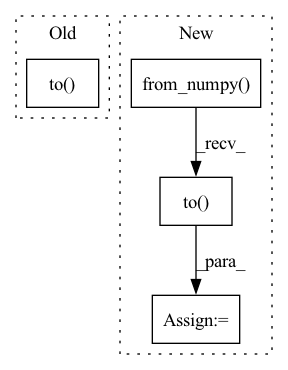

Pattern ID :36891
Before Change
script_module = torch.jit.script(model)
else:
dummy_input = get_torch_tensor(dataloader)
script_module = torch.jit.trace(model, tuple(t.to( target_device) for t in sample_to_tuple(dummy_input)))
torch.jit.save(script_module, exported_model_path.as_posix())
After Change
if self.target_jit_type == JitType.SCRIPT:
script_module = torch.jit.script(model)
else:
dummy_input = tuple(
torch.from_numpy(val.astype(spec.dtype)).to( target_device)
for (val, spec) in zip(profiling_sample.values(), input_metadata.values())
)
script_module = torch.jit.trace(model, dummy_input)
In pattern: SUPERPATTERN
Frequency: 3
Non-data size: 4
Instances Fragment ID: 105010394
Project Name: triton-inference-server/model_navigator
Commit Name: 1fb19ee11e4de51157ee2d846fe1a8ee633202e9
Time: 2022-02-24
Author: ptarasiewicz@nvidia.com
File Name: model_navigator/framework_api/commands/export/pyt.py
M Class Name: ExportPYT2TorchScript
N Class Name: ExportPYT2TorchScript
M Method Name: __call__(7)
N Method Name: __call__(6)
M Parent Class: Command
N Parent Class: Command
M File Name: model_navigator/framework_api/commands/export/pyt.py
N File Name: model_navigator/framework_api/commands/export/pyt.py
M Start Line: 57
M End Line: 58
N Start Line: 50
N End Line: 67
Before Change
index = x_test.index
x_test = torch.from_numpy(x_test.values).float()
x_test = x_test.to( self.device)
self.sfm_model.eval()
with torch.no_grad():
if self.device != "cpu":After Change
else:
end = begin + self.batch_size
x_batch = torch.from_numpy( x_values[begin:end]) .float()
if self.device != "cpu":
x_batch = x_batch.to( self.device)
with torch.no_grad():
if self.device != "cpu":
pred = self.sfm_model(x_batch).detach().cpu().numpy() Fragment ID: 105010395
Project Name: microsoft/qlib
Commit Name: 64b7748033326b0aaa3c4c907ccd9b2d353d553d
Time: 2020-11-25
Author: haouyw2@gmail.com
File Name: qlib/contrib/model/pytorch_sfm.py
M Class Name: SFM
N Class Name: SFM
M Method Name: predict(2)
N Method Name: predict(2)
M Parent Class: Model
N Parent Class: Model
M File Name: qlib/contrib/model/pytorch_sfm.py
N File Name: qlib/contrib/model/pytorch_sfm.py
M Start Line: 415
M End Line: 427
N Start Line: 420
N End Line: 445
Before Change
estimated_sources = norbert.wiener(estimated_amplitude, mixture, eps=eps)
estimated_sources = estimated_sources.transpose(3, 2, 1, 0)
estimated_sources = torch.Tensor(estimated_sources).to( device, dtype)
return estimated_sourcesAfter Change
estimated_amplitude = estimated_amplitude.transpose(3, 2, 1, 0)
estimated_sources = norbert.wiener(estimated_amplitude, mixture, eps=eps)
estimated_sources = estimated_sources.transpose(3, 2, 1, 0)
estimated_sources = torch.from_numpy(estimated_sources).to( device, dtype)
return estimated_sources Fragment ID: 105010396
Project Name: tky823/dnn-based_source_separation
Commit Name: 25840d65326c0f609aa08d466f1a5a8d68a7ba1d
Time: 2021-08-14
Author: 40362510+tky823@users.noreply.github.com
File Name: egs/musdb18/d3net/src/adhoc_driver.py
M Class Name: AnonimousClass
N Class Name: AnonimousClass
M Method Name: apply_multichannel_wiener_filter(4)
N Method Name: apply_multichannel_wiener_filter(4)
M Parent Class:
N Parent Class:
M File Name: egs/musdb18/d3net/src/adhoc_driver.py
N File Name: egs/musdb18/d3net/src/adhoc_driver.py
M Start Line: 358
M End Line: 372
N Start Line: 358
N End Line: 377